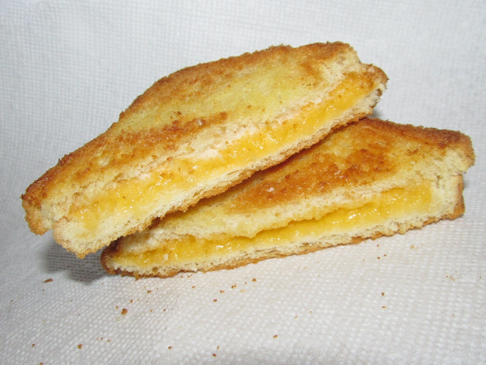

Home
Grilled Cheese Sandwich

Credit:Wikimedia
Description
This is a recipe that I found on Allrecipes and I knew I had to pick this classic meal. I actually have
never made it like this, usually I use a sandwich maker. This recipe makes 2 servings and there is a extra
information on the original website about the selection of bread and cheese that you should go check out!
Ingredients:
- 4 slices of white bread
- 3 tablespoons of butter devided
- 2 slices of cheddar cheese
Steps:
- Gather all the ingredients
- Preheat a nonstick skillet over medium heat. Generously butter one side of each bread slice.
- Place 1 slice bread, butter-side down, in the hot skillet; top with 1 slice cheese.
- Place 1 slice breadm butter-side up, on top of the cheese.
- Cook until lightly browned on one side; flip and continue cooking until cheese is melted.
- Repeat with remaining bread and cheese slices. Serve and enjoy!